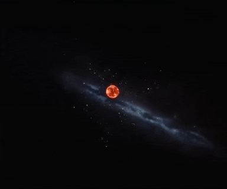
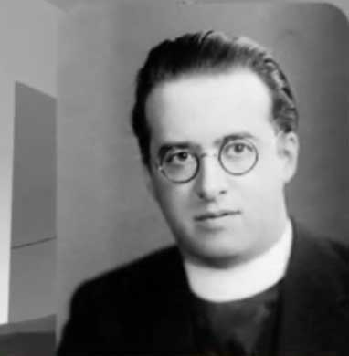
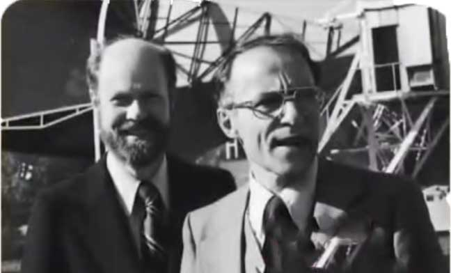
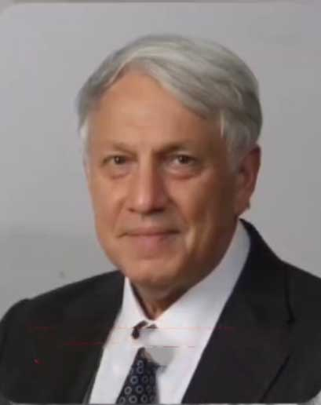
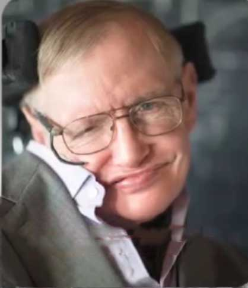
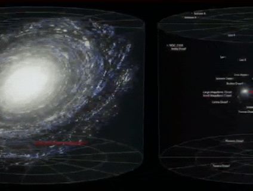

بیگ بنگ یا انفجار بزرگ که همه چیز از یک نقطه فشرده شروع شد

این ایده برای اولین بار در سال 1927 توسط فیزیکدان بلژیکی ژورژ لومتر

مطرح شد و در دهه 1960 با کشف تابش زمینه کیهانی توسط آرنو پن زیاس و رابرت ویلسون در سال 1965 تایید شد

و بخاطر این کشف مهم موفق به دریافت جایزه نوبل فیزیک شدند
اما قرآن 1400 سال قبل در آیه 30 سوره انبیاء میگه :
این توصیف دقیق جدایی کیهان را یادآوری میکنه که علم مدرن قرن ها بعد به اون دست پیدا میکنه
در سال 1983 آندری لینده

فیزیکدان و کیهان شناس برجسته روسی در مقاله جهان تورمی میگه :
فرآیند تورم کیهانی می تونه حباب هایی ایجاد کنه که هر کدوم از اونها یک حهان مستقل با ویژگی های خاص خود هستند ایده او سنگ بنای چند جهانی شد که یکی از قوی ترین مدل های جهان موازی در کیهان شناسی مدرنه
و استیون هاوکینگ یکی از بزرگترین فیزیکدانان نظری

در مصاحبه ای با بی بی سی در سال 2011 میگه :
مدل ما پیش بینی میکنه که بسیاری از جهان های مختلف با قوانین فیزیکی متفاوت وجود داره

هاوکینگ یکی از مهمترین فیزیکدانانی بود که ایده چند جهانی یا همون جهان های موازی رو از دیدگاه علمی مطرح کرد
اما 1400 سال قبل قران خدا رو (رَبِّ الْعَالَمِينَ) معرفی می کنه یعنی پروردگار جهان ها نه فقط یک جهان
حالا شما میگین خدا جواب نادانی هاست ؟
اما علم داره قدم به قدم به توصیف های دقیق قرآن نزدیک میشه بدون اینکه با اون در تضاد باشه
و چه زیبا خداوند در آیه 53 سوره فصلت می فرماید :
به زودی نشانه های خود را در اطراف جهان و در درون جانشان به آنها نشان می دهیم تا آشکار گردد که او حق است